using SymPy # Para el cálculo simbólico de límites.
using Plots # Para el dibujo de gráficas.
#plotlyjs() # Para obtener gráficos interactivos.
using ImplicitPlots # Para dibujar curvas implícitas.
using MTH229 # Para restringir la gráfica de una función a su dominio.
using LaTeXStrings, Latexify # Para usar código LaTeX en los gráficos.5 Derivadas de funciones reales
5.1 Ejercicios Resueltos
Para la realización de esta práctica se requieren los siguientes paquetes:
Ejercicio 5.1 Galileo Galilei trató de estudiar el movimiento de un cuerpo en caída libre con un experimento en el que midió la distancia recorrida cada segundo por una bola que caía por un plano inclinado.

La siguiente tabla recoge sus mediciones.
| Tiempo (s) | Distancia (cm) |
|---|---|
| 0 | 0 |
| 1 | 1 |
| 2 | 4 |
| 3 | 9 |
| 4 | 16 |
| 5 | 25 |
- Dibujar la gráfica que resulta de unir los puntos correspondientes a los pares de la tabla con segmentos. ¿Qué forma tiene la gráfica?
Ayuda
Solución
using Plots
t = [0, 1, 2, 3, 4, 5, 6]
d = [0, 1, 4, 9, 16, 25, 36]
scatter(t, d, legend=false)
plt = plot!(t, d, linecolor="blue", xlab="Tiempo (s)", ylab="Distancia recorrida (cm)")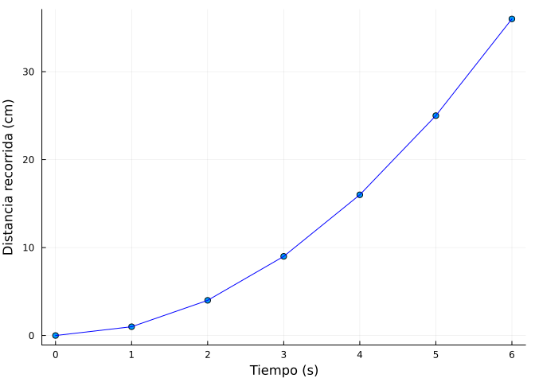
Se aprecia que una forma parabólica.
- Calcular la velocidad media (tasa de variación media) desde los instantes \(t=0, 1, 2\) hasta el instante \(t=3\) y dibujar la rectas secantes a la gráfica anterior en esos instantes. ¿Cómo es la tendencia de las velocidades medias?
Ayuda
La tasa de variación media de una función \(f\) en un intervalo \([a,b]\) viene dada por la fórmula
\[ TVM(f,[a,b]) = \frac{f(b)-f(a)}{b-a}, \]
y la recta secante a la función \(f\) en el intervalo \([a,b]\) tiene ecuación
\[ y = f(a) + TVM(f,[a,b]) (x-a). \]
Solución
# Función para el cálculo de la velocidad media en del instante i al instante j.
tvm(i, j) = (d[j]-d[i])/(t[j]-t[i])
j = 4
# Cálculo de las velocidades medias.
for i in 1:3
println("Velocidad media desde el instante $(t[i]) al instante $(t[j]): $(tvm(i, j)) cm/s")
end
# Función para calcular la ecuación de la recta secante en los instantes i y j.
secante(x, i, j) = d[i] + tvm(i, j) * (x - t[i])
# Dibujo de las rectas secantes
for i in 1:3
plt = plot!(x -> secante(x,i,j))
end
pltVelocidad media desde el instante 0 al instante 3: 3.0 cm/s
Velocidad media desde el instante 1 al instante 3: 4.0 cm/s
Velocidad media desde el instante 2 al instante 3: 5.0 cm/s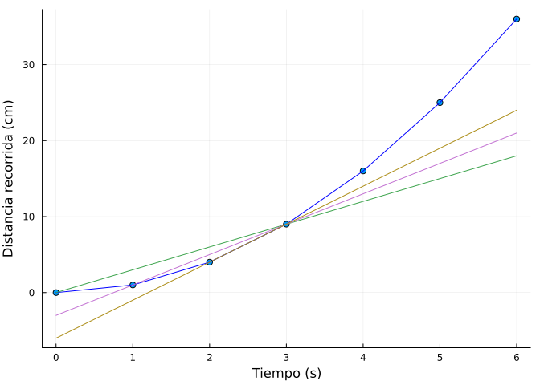
Las velocidades medias crecen a medida que pasa el tiempo.
- Calcular la velocidad media desde el instante \(t=3\) hasta los instantes \(t=6, 5, 4\) y dibujar la rectas secantes a la gráfica anterior en esos instantes. ¿Cómo es la tendencia de las velocidades medias? ¿Hacia dónde tiende la velocidad media cuando los aproximamos al instante \(t=3\) con instantes menores y mayores?
Solución
i = 4
# Cálculo de las velocidades medias.
for j in 7:-1:5
println("Velocidad media desde el instante $(t[i]) al instante $(t[j]): $(tvm(i, j)) cm/s")
end
# Dibujo de las rectas secantes.
for j in 7:-1:5
plt = plot!(x -> secante(x,i,j))
end
pltVelocidad media desde el instante 3 al instante 6: 9.0 cm/s
Velocidad media desde el instante 3 al instante 5: 8.0 cm/s
Velocidad media desde el instante 3 al instante 4: 7.0 cm/s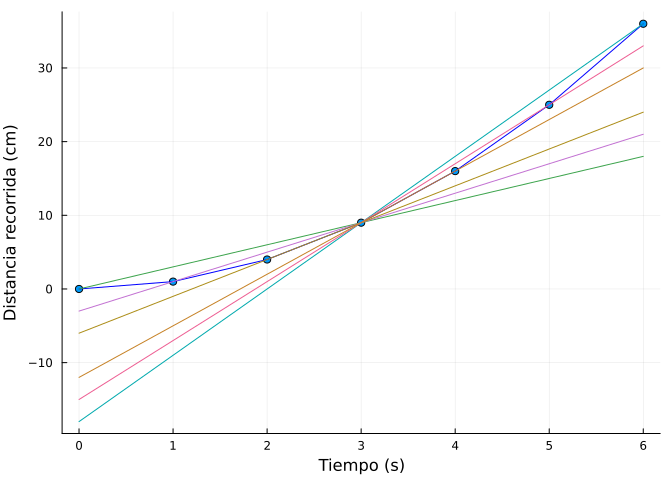
Las velocidades medias decrecen a medida que el tiempo decrece.
Se puede deducir que las velocidades medias tienden a \(6\) cm/s cuando los instantes se aproximan a \(3\) s.
- Calcular la variación en la distancia recorrida cada segundo que pasa. ¿Cómo evoluciona la velocidad de la bola?
Solución
v = []
for i in 2:length(d)
push!(v, d[i]-d[i-1])
println("Velocidad media desde el instante $(t[i-1]) al instante $(t[i]): $(v[i-1]) cm/s")
endVelocidad media desde el instante 0 al instante 1: 1 cm/s
Velocidad media desde el instante 1 al instante 2: 3 cm/s
Velocidad media desde el instante 2 al instante 3: 5 cm/s
Velocidad media desde el instante 3 al instante 4: 7 cm/s
Velocidad media desde el instante 4 al instante 5: 9 cm/s
Velocidad media desde el instante 5 al instante 6: 11 cm/s- Calcular la variación en la velocidad cada segundo que pasa. ¿Cómo evoluciona la aceleración de la bola? ¿Qué conclusiones sacó Galileo sobre la aceleración de la bola?
Solución
for i in 2:length(v)
println("Aceleración media desde el instante $(t[i-1]) al instante $(t[i]): $(v[i]-v[i-1]) cm/s")
endAceleración media desde el instante 0 al instante 1: 2 cm/s
Aceleración media desde el instante 1 al instante 2: 2 cm/s
Aceleración media desde el instante 2 al instante 3: 2 cm/s
Aceleración media desde el instante 3 al instante 4: 2 cm/s
Aceleración media desde el instante 4 al instante 5: 2 cm/sSe observa que la aceleración es la misma. Galileo concluyó que la aceleración de un cuerpo en caída libre era uniforme.
Ejercicio 5.2 Representar gráficamente la función \(f(x)=|x-1|\) y estudiar su derivabilidad en el punto \(x=1\) haciendo uso de la definición de derivada.
Solución
using Plots, SymPy, LaTeXStrings
@vars x real=true
f(x) = abs(x-1)
display(plot(f(x), label=L"f(x)=|x-1|"))
println("Derivada por la izquierda: ", limit((f(x)-f(1))/(x-1), x=>1, dir="-"))
println("Derivada por la derecha: ", limit((f(x)-f(1))/(x-1), x=>1, dir="+"))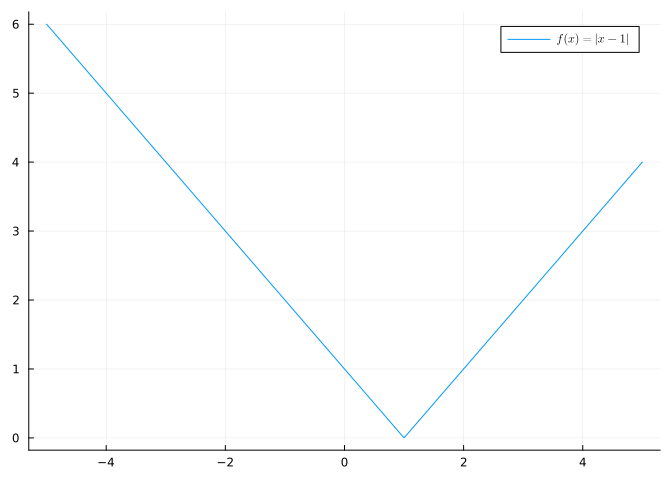
Derivada por la izquierda: -1
Derivada por la derecha: 1Como la derivada por la izquierda y por la derecha no son iguales, la función no es derivable en \(x=1\).
Ejercicio 5.3 Sea \(f(x)=\sqrt{x}\).
- Dibujar la gráfica de \(f\) y dibujar las rectas secantes a \(f\) en los intervalos \([\frac{i}{10}, 1]\) para \(i=0,\ldots, 9\). ¿Hacia dónde tienden las pendientes de las rectas secantes?
Solución
using Plots, SymPy, LaTeXStrings, Latexify
@vars x real=true
f(x) = sqrt(x)
plt = plot(f, 0, 2, ylims=(0,2.5), linewidth = 3, label=L"f(x)=\sqrt{x}", legend=:topleft)
secante(x, i, j) = f(i) + (f(j)-f(i))/(j-i) * (x - i)
for i in 0:9
sec = secante(x, i/10, 1)
plt = plot!(sec, label =L"y=" * latexify(sec))
end
plt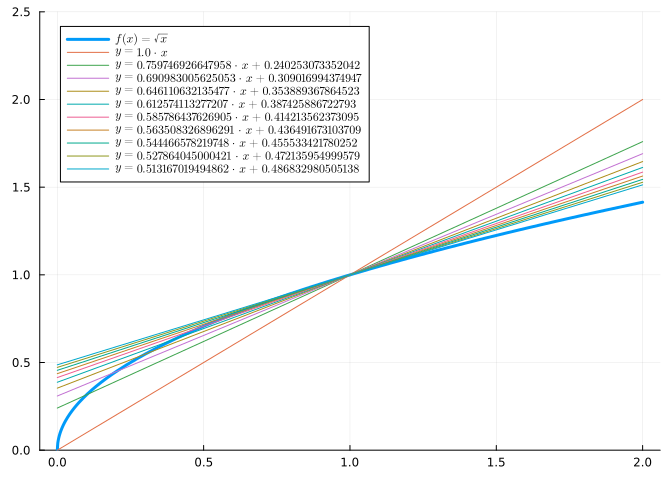
Se deduce que las pendientes de las rectas secantes tienen a \(0.5\).
- Dibujar la recta tangente a la gráfica de \(f\) en \(x=1\).
Ayuda
La ecuación de la recta tangente a la función \(f(x)\) en el punto \(a\) es \(y=f(a)+f'(a)(x-a)\).
Usar la función diff(f) del paquete SymPy para calcular simbólicamente la derivada de la función f.
Solución
tg = f(1) + diff(f)(1) * (x-1)
plot!(tg, linewidth = 2, color = "red", label="Tangente " * L"y=" * latexify(tg))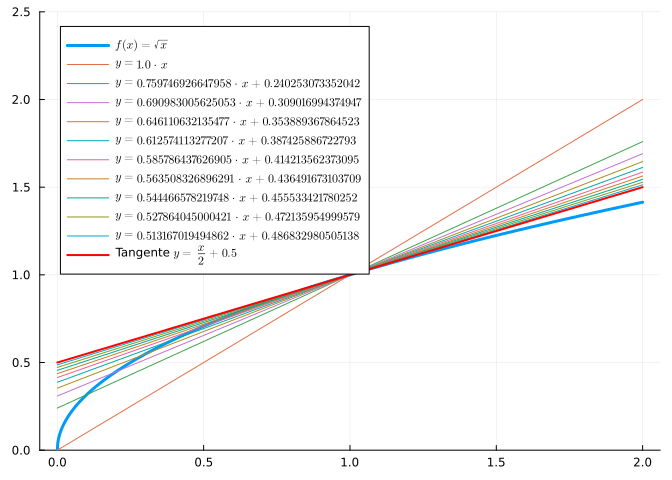
Ejercicio 5.4 Calcular las derivadas de las siguientes funciones hasta el orden 4 y deducir la expresión de la derivada de orden \(n\).
- \(f(x)=\ln(x+1)\)
Ayuda
Usar la función diff(f,n) del paquete SymPy para calcular simbólicamente la derivada de grado n de la función f.
Solución
using SymPy
@vars x real=true
f(x) = log(x+1)
println("Primera derivada: ", diff(f))
println("Segunda derivada: ", diff(f,2))
println("Tercera derivada: ", diff(f,3))
println("Cuarta derivada: ", diff(f,4))Primera derivada: 1/(x + 1)
Segunda derivada: -1/(x + 1)^2
Tercera derivada: 2/(x + 1)^3
Cuarta derivada: -6/(x + 1)^4La derivada de orden \(n\) es \(f^{(n}=\frac{(-1)^{n-1}(n-1)!}{(x+1)^n}\).
- \(f(x)=a^x\)
Solución
using SymPy
@vars x a real=true
g(x) = a^x
println("Primera derivada: ", diff(g(x),x))
println("Segunda derivada: ", diff(g(x),x,2))
println("Tercera derivada: ", diff(g(x),x,3))
println("Cuarta derivada: ", diff(g(x),x,4))Primera derivada: a^x*log(a)
Segunda derivada: a^x*log(a)^2
Tercera derivada: a^x*log(a)^3
Cuarta derivada: a^x*log(a)^4La derivada de orden \(n\) es \(g^{(n}=a^x\ln(a)^n\).
- \(h(x)=\operatorname{sen}(x)+\cos(x)\)
Solución
using SymPy
@vars x real=true
h(x) = sin(x)+cos(x)
println("Primera derivada: ", diff(h))
println("Segunda derivada: ", diff(h,2))
println("Tercera derivada: ", diff(h,3))
println("Cuarta derivada: ", diff(h,4))Primera derivada: -sin(x) + cos(x)
Segunda derivada: -(sin(x) + cos(x))
Tercera derivada: sin(x) - cos(x)
Cuarta derivada: sin(x) + cos(x)La derivada de orden \(n\) es
\[ h^{(n}= \begin{cases} \operatorname{sen}(x)+\cos(x) & \mbox{si } n=4k\\ \cos(x)-\operatorname{sen}(x) & \mbox{si } n=4k+1\\ -\operatorname{sen}(x)-\cos(x) & \mbox{si } n=4k+2\\ -\cos(x)+\operatorname{sen}(x) & \mbox{si } n=4k+3\\ \end{cases} \quad k\in\mathbb{N} \]
Ejercicio 5.5 Calcular y dibujar las rectas tangente y normal a la gráfica de la función \(f(x)=\ln(\sqrt{x+1})\) en \(x=1\).
Ayuda
La ecuación de la recta tangente a una función \(f\) en el punto \(a\) es
\[ y = f(a)+f'(a)(x-a), \]
y la de la recta normal
\[ y = f(a)-\frac{1}{f'(a)}(x-a). \]
Solución
using Plots, SymPy, LaTeXStrings, Latexify
@vars x real=true
f(x) = log(sqrt(x+1))
plot(f, -1, 3, xlims=(-1,3), ylims=(-1,2), aspect_ratio=1, label=L"f(x)=\ln(\sqrt{x+1})", legend=:topright)
tg = f(1)+diff(f)(1)*(x-1)
plot!(tg, label="Tangente "*L"y="*latexify(tg))
nm = f(1)-1/diff(f)(1)*(x-1)
plot!(nm, label="Normal "*L"y="*latexify(nm))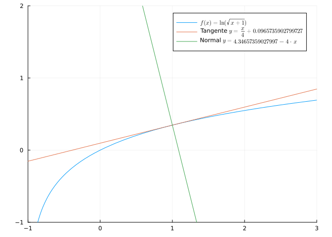
Ejercicio 5.6 Sea la función \(g(x)=\dfrac{2x^3-3x}{x^2+1}\).
- Dibujar la gráfica de \(g\).
Solución
using Plots, SymPy, LaTeXStrings, Latexify
@vars x real=true
g(x)=(2x^3-3x)/(x^2+1)
plot(g, -2, 2, label=L"g(x)=\frac{2x^3-3x}{x^2+1}", legend=:topleft)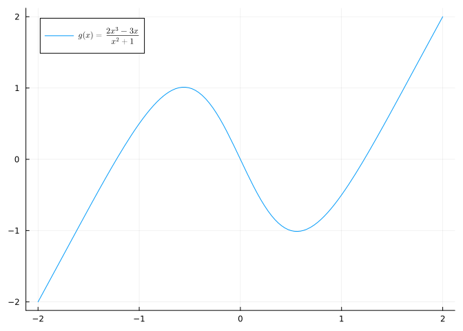
- Calcular la derivada de \(g\) y dibujar su gráfica en la misma gráfica que la de \(g\).
Solución
plot!(diff(g), label=L"g'(x)="*latexify(simplify(diff(g))))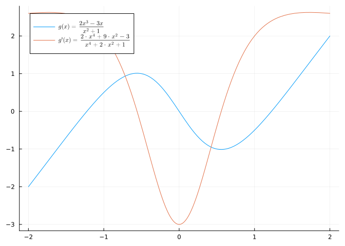
- Calcular los puntos críticos de \(g\).
Ayuda
Los puntos críticos de una función son los puntos donde se anula la derivada.
Solución
N.(solve(diff(g)))4-element Vector{Number}:
-0.5583347485961263326654828454569561179259924185641573901331644861659481412422448
0.5583347485961263326654828454569561179259924185641573901331644861659481412422448
0.0 - 2.193567343732555569019661050002362205421503627733216097530210072083854926923076im
0.0 + 2.193567343732555569019661050002362205421503627733216097530210072083854926923076imExisten dos puntos críticos en \(x=-0.55\) y \(x=0.55\) aproximadamente.
- A la vista de los puntos críticos y de la gráfica de la función derivada, determinar los intervalos de crecimiento y los extremos relativos de la función.
Ayuda
Una función \(f\) derivable en el punto \(a\) es creciente si y solo si \(f'(a)>0\) y decrecientes si y solo si \(f'(a)<0\).
Solución
La derivada es positiva en los intervalos \((-\infty,-0.55)\) y \((0.55,\infty)\), por lo que la función \(g\) es creciente en estos intervalos, y la derivada es negativa en el intervalo \((-0.55, 0.55)\), por lo que la función \(g\) es decreciente en este intervalo.
En el punto crítico \(x=-0.55\) la derivada es positiva a la izquierda y negativa a la derecha, por lo que, según el criterio de la primera derivada, la función \(g\) tiene un máximo relativo.
En el punto crítico \(x=0.55\) la derivada es negativa a la izquierda y positiva a la derecha, por lo que, según el criterio de la primera derivada, la función \(g\) tiene un mínimo relativo.
- Calcular segunda la derivada de \(g\) y dibujar su gráfica en la misma gráfica que la de \(g\).
Solución
plot!(diff(g,2), label=L"g''(x)="*latexify(simplify(diff(g(x),x,2))))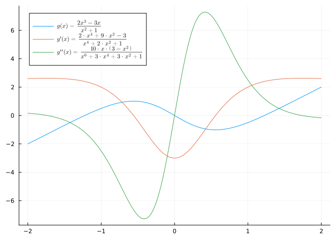
- Calcular los puntos que anulan la segunda derivada de \(g\).
Solución
N.(solve(diff(g,2)))3-element Vector{Real}:
0
-1.732050807568877293527446341505872366942805253810380628055806979451933016908798
1.732050807568877293527446341505872366942805253810380628055806979451933016908798Existen tres puntos donde se anula \(g''(x)\), en \(x=-1.73\), \(x=0\) y \(x=1.73\) aproximadamente.
- A la vista de las raíces de la gráfica de la segunda derivada, determinar los intervalos de concavidad y los puntos de inflexión de la función \(g\).
Ayuda
Una función \(f\) dos veces derivable en el punto \(a\) es cóncava hacia arriba si y solo si \(f''(a)>0\) y cóncava hacia abajo si y solo si \(f''(a)<0\). Los puntos de inflexión de una función son los puntos donde cambia la concavidad.
Solución
La segunda derivada es positiva en los intervalos \((-\infty,-1,73)\) y \((0,1.73)\), por lo que la función \(g\) es cóncava hacia arriba en esos intervalos, y la segunda derivada es negativa en los intervalos \((-1.73,0)\) y \((1.73,\infty)\), por lo que la función \(g\) es cóncava hacia abajo en esos intervalos.
\(g\) tiene tres puntos de inflexión en \(x=1.73\), \(x=0\) y \(x=1.73\), donde cambia la concavidad de la función.
Ejercicio 5.7 Considérese la curva con ecuación \(x^4-x^2+y^2=0\).
- Dibujar la gráfica de la curva.
Ayuda
Para dibujar curvas implícitas utilizar la función implicit_plot del paquete ImplicitPlots.
Solución
using ImplicitPlots, Plots, SymPy, LaTeXStrings, Latexify
@vars x y real=true
f(x,y)=x^4-3x^2+2y^2
implicit_plot(f; xlims=(-3,3), ylims=(-1.5,1.5), label=L"x^4-3x^2+2y^2=0", legend=:topleft)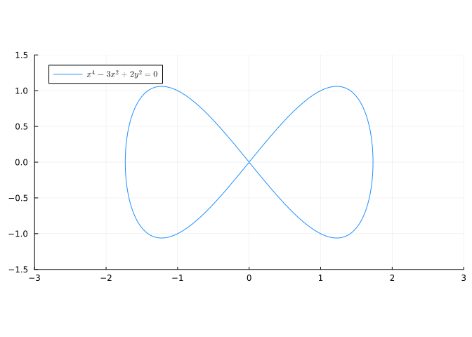
- Calcular la tasa de variación de \(y\) con respecto a \(x\) en el punto \((1,1)\).
Ayuda
Para realizar derivadas implícitas simbólicamente hay que definir una función simbólica con el comando @syms u() del paquete SymPy y reemplazar y por u(x) en la ecuación de la curva implícita.
Después hay que hacer la derivada de ambos lados de la ecuación y finalmente hay que resolver la ecuación despejando la derivada de u(x).
Solución
# Declaramos una función simbólica
@syms u()
# Reemplazamos y por una función simbólica u(x).
ex1 = f(x,y)(y=>u(x))
# Calculamos la derivada de ambos lados de la ecuación y la resolvemos para la derivada de u'(x).
du_dx = solve(diff(ex1,x), diff(u(x),x))[1]
# Deshacemos el cambio y=u(x).
dy_dx = du_dx(u(x)=>y)
println("y'=", dy_dx)y'=x*(3 - 2*x^2)/(2*y)- Dibujar la recta tangente a la curva anterior en el punto \((1,1)\).
Solución
using Latexify
# Definimos la funciónd de la recta tangente
tg = 1 + dy_dx(x=>1, y=>1) * (x-1)
plot!(tg, label="Tangente "*L"y="*latexify(tg))
# Dibujamos el punto (1,1)
scatter!([1],[1], label="")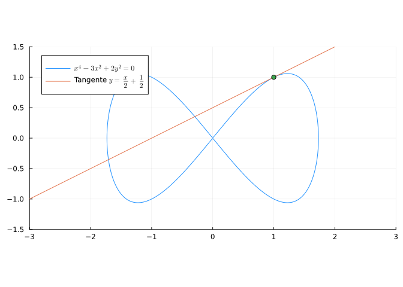
Ejercicio 5.8 Crear una función para calcular el polinomio de Taylor de grado \(n\) una función \(f\) en un punto \(a\) y utilizarla para dibujar los polinomios de Taylor de la función \(f(x)=\operatorname{sen}(x)\) en \(a=0\) hasta el grado \(5\).
Ayuda
La fórmula del polinomio de Taylor de gardo \(n\) de la función \(f\) en el punto \(a\) es
\[ P^n_{f,a}(x) = f(a)+f'(a)(x-a)+\frac{f''(a)}{2!}(x-a)^2+ \cdots + \frac{f^{(n}(a)}{n!}(x-a)^n. \]
Solución
using Plots, SymPy, LaTeXStrings, Latexify
@vars x real=true
function taylor(f, a=0, n=2)
sum(diff(f, x, i)(a)/factorial(i)*(x-a)^i for i=0:n)
end
f(x)=sin(x)
plt = plot(f, ylims=(-2,2), linewidth=3, label=L"f(x)=\operatorname{sen}(x)")
for i in 1:5
pol = taylor(f(x), 0, i)
plt = plot!(pol, label=latexstring("P^{$(i)}(x)=$(pol)"))
end
plt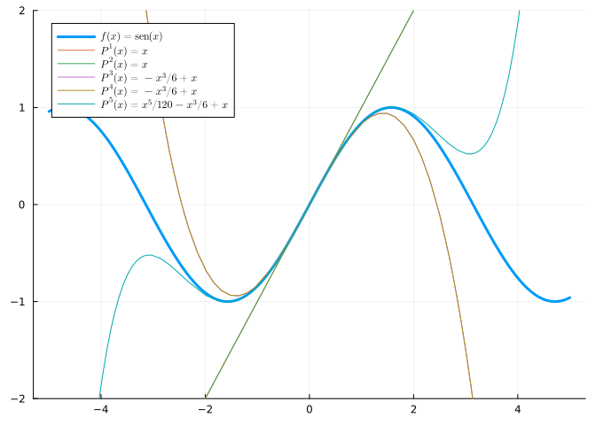
Ejercicio 5.9 Calcular los polinomios de taylor hasta grado 10 de las siguientes funciones en los puntos indicados.
- \(f(x)=\cos(x)\) en \(x=\pi/2\).
Ayuda
Para calcular polinomios de Taylor utilizar la función series del paquete SymPy.
Solución
using SymPy
@vars x real=true
f(x) = cos(x)
series(f(x), x, Sym(pi)/2, 10)\(\frac{\pi}{2} + \frac{\left(x - \frac{\pi}{2}\right)^{3}}{6} - \frac{\left(x - \frac{\pi}{2}\right)^{5}}{120} + \frac{\left(x - \frac{\pi}{2}\right)^{7}}{5040} - \frac{\left(x - \frac{\pi}{2}\right)^{9}}{362880} - x + O\left(\left(x - \frac{\pi}{2}\right)^{10}; x\rightarrow \frac{\pi}{2}\right)\)
- \(g(x)=\ln(x)\) en \(x=1\)
Solución
g(x) = log(x)
series(g(x), x, 1, 10)\(-1 - \frac{\left(x - 1\right)^{2}}{2} + \frac{\left(x - 1\right)^{3}}{3} - \frac{\left(x - 1\right)^{4}}{4} + \frac{\left(x - 1\right)^{5}}{5} - \frac{\left(x - 1\right)^{6}}{6} + \frac{\left(x - 1\right)^{7}}{7} - \frac{\left(x - 1\right)^{8}}{8} + \frac{\left(x - 1\right)^{9}}{9} + x + O\left(\left(x - 1\right)^{10}; x\rightarrow 1\right)\)
- \(h(x)=e^{\operatorname{sen}(x)}\) en \(x=0\)
Solución
h(x) = exp(sin(x))
series(h(x), x, 0, 10)\(1 + x + \frac{x^{2}}{2} - \frac{x^{4}}{8} - \frac{x^{5}}{15} - \frac{x^{6}}{240} + \frac{x^{7}}{90} + \frac{31 x^{8}}{5760} + \frac{x^{9}}{5670} + O\left(x^{10}\right)\)
Ejercicio 5.10 Aproximar el número \(\ln(1.2)\) mediante un polinomio de Taylor de grado 8 y dar una cota del error cometido. ¿Hasta qué grado habría que llegar para obtener un error menor de \(10^{-10}\)?
Ayuda
El error en la aproximación de una función \(f(b)\) mediante un polinomio de Taylor de grado \(n\) en el punto \(a\) viene dado por el resto de Taylor, que en la forma de Lagrange es
\[ R^n_{f,a}(x) = \frac{f^{(n+1}(x)}{(n+1)!}(x-a)^{n+1}\mbox{ con } x\in[a,b]. \]
Solución
Utilizaremos un polinomio de MacLaurin de grado 5 para la función \(f(x)=\ln(1+x)\).
using SymPy
@vars x real=true
pol = series(log(1+x), x, 0, 6).removeO()
println("Aproximación de ln(1.2): ", N(pol(0.2)))Aproximación de ln(1.2): 0.18233066666666667Para dar una cota del error cometido calculamos el resto de Taylor en la forma de Lagrange.
resto = diff(log(1+x), x, 6)/factorial(6)*0.2^6
println("Resto de Taylor de orden 6: ", resto)
println("Derivada del resto : ", diff(resto))Resto de Taylor de orden 6: -1.06666666666667e-5/(x + 1)^6
Derivada del resto : 6.4e-5/(x + 1)^7Como la derivada no se anula en el intervalo \([1,2]\), no hay extremos relativos, y al ser una función continua en un intervalo cerrado, alcanza el máximo y mínimos absolutos en los extremos.
println("Cota del error: " , maximum(N(abs.([resto(0), resto(0.2)]))))
println("Error: ", abs(log(1.2)-pol(0.2)))Cota del error: 1.066666666666667e-5
Error: 9.10987271207642e-6Así pues, el error en la aproximación de \(\ln(1.2)\) es menor que \(1.06\cdot 10^{-5}\).
Para ver la fórmula general del resto de Taylor en la forma de Lagrange para un polinomio de Taylor de orden \(n\), calculamos las primeras derivadas sucesivas.
println("Primera derivada: ", diff(log(1+x)))
println("Segunda derivada: ", diff(log(1+x), x, 2))
println("Tercera derivada: ", diff(log(1+x), x, 3))
println("Cuarta derivada: ", diff(log(1+x), x, 4))Primera derivada: 1/(x + 1)
Segunda derivada: -1/(x + 1)^2
Tercera derivada: 2/(x + 1)^3
Cuarta derivada: -6/(x + 1)^4Así pues, se deduce que la derivada de orden \(n\) es \(f^{(n}(x)=(-1)^{n-1}\frac{(n-1)!}{(x+1)^n}\), de manera que el resto de Taylor de orden \(n\) es
\[ |R^n_{f,0}(x)| =\left|(-1)^{n-1}\frac{(n-1)!}{(n+1)!(x+1)^n}0.2^{n+1}\right| = \left|\frac{0.2^{n+1}}{(n+1)n(x+1)^n}\right|\ x\in [0,0.2]. \]
Como se trata de una función positiva y decreciente en el intervalo \([0,0.2]\), alcanza el máximo absoluto en el extremo inferior del intervalo, es decir, en \(x=0\), y por tanto se tiene,
\[ |R^n_{f,1}(x)| \leq \left|\frac{0.2^{n+1}}{(n+1)n}\right|. \]
Finalmente calculamos el primer número natural \(n\) tal que \(|R^n_{f,1}(x)|<10^{-10}\).
n=6
while 0.2^(n+1)/(n*(n+1)) > 10^-10
n += 1
end
print(n)11Así pues, habría que llegar al grado 11.
5.2 Ejercicios propuestos
Ejercicio 5.11 Dada la función
\[ f(x)= \begin{cases} \operatorname{sen}(x)^2 & \mbox{si $x\leq 0$}, \\ ax^2+b & \mbox{si $0<x\leq c$}, \\ \ln(x) & \mbox{si $c<x$}, \end{cases} \]
¿Para qué valores de \(a\), \(b\) y \(c\) la función es derivable en todo \(\mathbb{R}\)?
Ejercicio 5.12 ¿Cuál es la derivada de orden \(n\) de la función \(f(x)=\dfrac{1}{\sqrt{x+1}}\)?
Ejercicio 5.13 Dadas las funciones \(f(x)=\ln\left(\sqrt{\dfrac{x^2}{2}}\right)\) y \(g(x)=x^3+1\), ¿en qué puntos la recta normal a \(f\) y la recta tangente a \(g\) con paralelas?
Ejercicio 5.14 Calcular el máximo y el mínimo absoluto de la función \(g(x)=\sqrt{x^4-3x^3+\frac{5}{2}x^2}\) en el intervalo \([-0.5,1.5]\).
- Mínimo absoluto
- Máximo absoluto
Ejercicio 5.15 ¿Cuáles de las siguientes afirmaciones son ciertas sobre la función \(h(x)=\dfrac{x^2+1}{e^x}\)?
Ejercicio 5.16 Una cuerda de longitud \(l\) está sujeta en sus extremos en los puntos \((0,0)\) y \((a,b)\). De la cuerda cuelga un anillo. ¿En qué posición estará el anillo debido a la fuerza de gravedad suponiendo que \(l=10\), \(a=3\) y \(b=2\)?
Ayuda
Puesto que la longitud de la cuerda es fija, del siguiente diagrama se deduce que las las posiciones \((x,y)\) que puede ocupar el anillo vienen dadas por la ecuación
\[ l = \sqrt{x^2 + y^2} + \sqrt{(a-x)^2 + (b-y)^2} \]

Coordenada x
Coordenada y
Ejercicio 5.17 Calcular de manera aproximada el valor de \(\operatorname{sen}(1/2)\) usando los siguientes polinomios de Taylor de la función \(f(x)=\operatorname{sen}(x)\).
- Polinomio de Taylor de grado 20 en el punto \(\pi/6\).
- Polinomio de MacLaurin de grado 100.
- ¿Qué polinomio da una mejor aproximación?